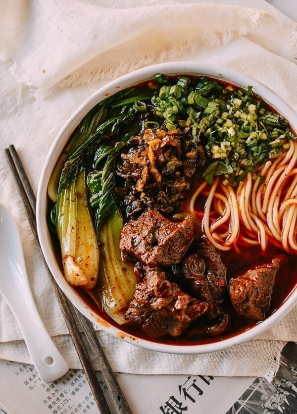

Beef Noodle Soup

Description
Tender beef, a rich and slightly spicy broth, fresh noodles, a little bok choy, and that absolutely necessary fistful of Chinese pickled mustard greens along with fresh scallions and cilantro
Ingredients
- 3 pounds beef shank
- 2 tablespoons oil
- A 2-inch piece of ginger
- 6 cloves garlic
- 3 scallions
- 1 onion
- 1 tomato
- 4 dried chilies
- 1 tablespoon tomato paste
- 2 tablespoons spicy bean paste
- 2 teaspoons sugar
- 1/2 cup soy sauce
- 1/2 cup Shaoxing wine
- 8 cups water
- 1 Chinese aromatic herb packet
- 32 ounces fresh wheat (white) noodles
- A small handful of bok choy for each serving
- Cilantro
- Scallions
- Pickled mustard greens
Steps
- Boil enough water in a pot to boil all of your beef. Once the water is boiling, add the beef. Let it come back up to a boil, and boil for 1 minute. Strain in a colander and rinse thoroughly with fresh water to remove any impurities.
- Next, in your instant pot, turn on the saute setting. Add the oil, crushed ginger, garlic, scallions, and onions in that order. Stir to lightly caramelize. Let the onion turn translucent. Add the tomato and dried chilies.
- Next, add the meat to the pot. Then add the tomato paste, spicy bean paste, sugar, soy sauce, and Shaoxing wine, and mix thoroughly.
- Pour 8 cups of water into the instant pot. Add the spice packet. The instant pot should be filled to the 10-cup line; it should not be more than ⅔ of the way full per safety instructions. Our instant pot is the largest size (8 quarts); if yours is smaller, you can halve the recipe accordingly.
- Close the lid of the instant pot, and make sure you have your vent set so it is not venting. Cook for 100 minutes on the Meat/Stew setting. If you don’t have an instant pot, you can use a regular pot on the stove, but instead, cook the soup on a low simmer for 3-4 hours.
- When the instant pot timer is up, carefully release the pressure valve (wear an oven mitt, so you don’t scald yourself!). Boil some noodles per package instructions, and in the last minute or two of the noodles cooking, throw your bok choy in and blanch until just tender.
- Serve each bowl of Taiwanese beef noodle soup with a serving of noodles, a few stalks of bok choy, and generous sprinklings of finely minced cilantro, scallions, and Chinese pickled mustard greens. Pro tip, buy the pre-seasoned spicy mustard greens and you can use them straight out of the package. If you are using the non-spicy version (from a can, for example), chop and saute with a little oil, a few chopped dried red chilies, and a pinch of sugar.